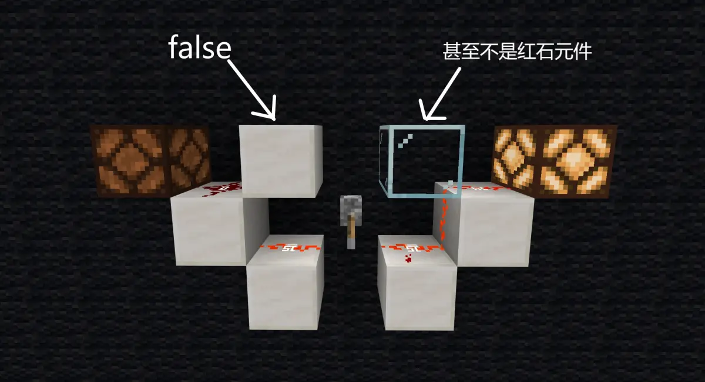
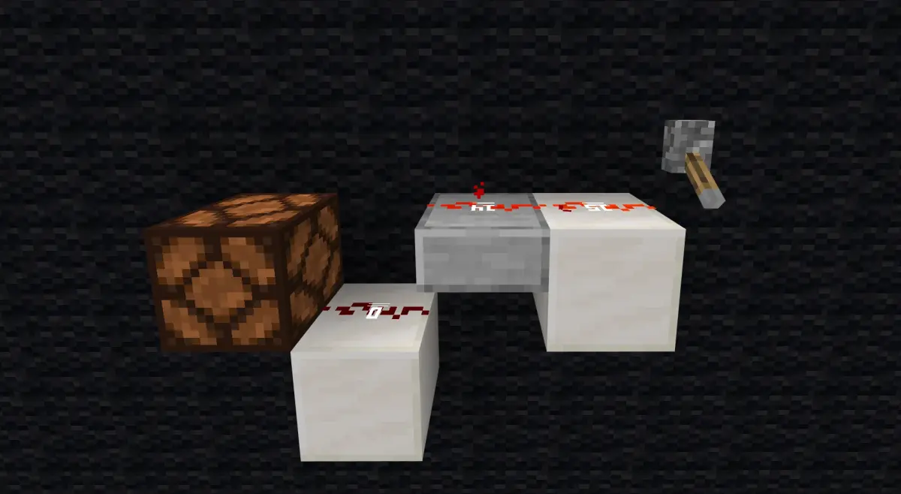
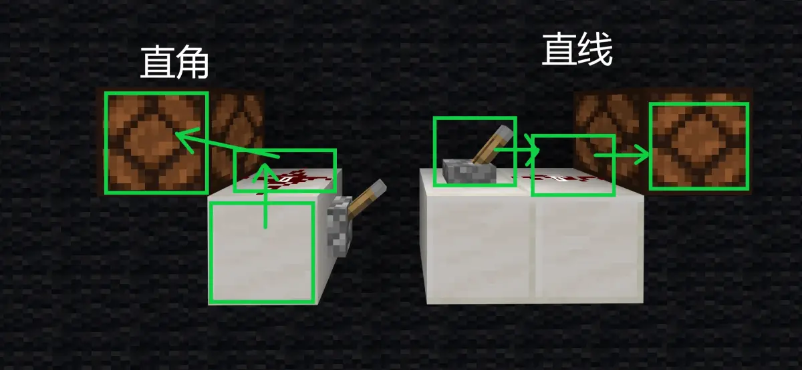

开始之前，先介绍两个个元件属性：
1. allowPowerUp:
该属性代表元件对信号的单向传递情况，如果为 false，则下方一格的信号无法斜向上传递，但是上方信号可以斜向下传递；

如果为true，则下方信号可以斜向上传递，但是上方信号无法斜向下传递。

半砖是充能方块元件，allowPowerUp为true
其代表了红石系统中元件的"压线"行为。
2. consumePowerAnyDirection:
该属性指示元件对信号的一种接收情况，如果为 true，则无条件接收周围信号。
该属性为 true 的元件有活塞，中继器，比较器，标靶。
非红石元件不具有以上属性。
压线逻辑
若红石粉要斜向上传递信号，则需要其上方方块不是红石元件，或allowPowerUp属性为true，也即通常意义上的不压线。
若红石粉要斜向下传递信号，则需要其下方方块不是红石元件，或allowPowerUp属性为false，然后斜向下红石粉的上方方块不压线。
本文将这两种情况统称为压线。
引线逻辑
当红石粉四周的某一元件满足下面的情况，则红石粉被引线：
当红石粉的某一斜角位置也是红石粉，且未出现压线，则红石粉被引线。
下面正式介绍连接规则。
连接规则
剩下的情况包括尝试连接其他电容器，连接充能方块，连接一般的消费者。
这里先定义一个电路走向的概念：
红石粉不是信号源，那么在红石粉之前应当有一个信号源或其他红石粉等元件，否则不构成电路，那么这个元件加上红石粉和红石粉后面的元件(即被搜索元件)，构成的相对方向，可能是水平一条直线，或一个拐角，这称为电路走向。

则满足以下情况时，被搜索元件可被连接：
其他情况均不允许连接。
以上就是完整的连接规则，注意连接不等于添加信号源，可能连接了，但是由于信号源重复等各种原因没有添加信号源。
视觉压线引线
红石粉在视觉上的压线引线由客户端控制，且与红石系统中红石粉的压线引线机制没有任何关联，因为后者需要构成带信号源的电路，前者只需要红石粉和可压线引线的方块。
其机制目前未知。
欢迎提交反例，以完善本理论。